무선설비기사 (2015-10-04 기출문제)
1과목: 디지털 전자회로
1. 다음 중 정류회로에서 다이오드를 병렬로 여러 개 접속시킬 경우에 나타나는 특성으로 옳은 것은?
- 과전압으로부터 보호할 수 있다.
- 정류회로의 전류용량이 커진다.
- 정류기의 역방향 전류가 감소한다.
- 부하출력에서 맥동률을 감소시킬 수 있다.
(정답률: 75%)

2. 다음 정전압 회로에서 전압 안정도를 0.⑤로 하기 위해서 RS의 값은? (단, rd=10[Ω])
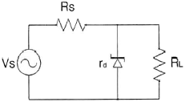
- 190[Ω]
- 260[Ω]
- 290[Ω]
- 330[Ω]
(정답률: 67%)
3. 다음 증폭기 회로에서 βDC=75인 경우 컬렉터 전압 VC는 약 얼마인가? (단, VBE=0.7[V]이다.)
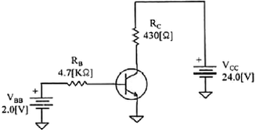
- 15.1[V]
- 17.1[V]
- 18.1[V]
- 20.1[V]
(정답률: 69%)
4. 전류 궤환 증폭기의 출력 임피던스는 궤환이 없을 경우에 비해 어떻게 변화하는가?
- 변화가 없다.
- 0이 된다.
- 감소한다.
- 증가한다.
(정답률: 75%)
5. 다음 증폭기 회로의 특성에 대한 설명으로 틀린 것은? (문제 오류로 실제 시험에서는 2, 3번이 정답처리 되었습니다 여기서는 2번을 누르면 정답 처리 됩니다.)
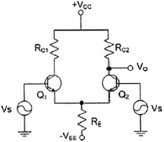
- 동상신호 제거비(CMRR)를 높게 하기 위해 hfe가 높은 트랜지스터를 사용한다.
- 동상신호 제거비(CMRR)를 높게 하기 위해 RE 값을 감소시킨다.
- 동상이득을 높게 하기 위해 RC1과 RC2 값을 감소시킨다.
- 차동이득을 높게 하기 위해 RE 값을 감소시킨다.
(정답률: 80%)
6. 입력신호의 전주기에 대하여 선형영역에서 동작하는 증폭기는?
- A급 증폭기
- B급 증폭기
- C급 증폭기
- D급 증폭기
(정답률: 84%)
7. 발진회로에서 발진을 지속하기 위해 필요한 과정은?
- 출력신호의 일부분을 부궤환시킨다.
- 출력신호의 일부분을 정궤환시킨다.
- 외부로부터 지속적으로 입력신호를 제공한다.
- L과 C성분을 제거한다.
(정답률: 85%)
8. 그림과 같은 발진회로에서 높은 주파수의 동작에 적절한 발진회로 구현을 위한 리액턴스 조건은 무엇인가?
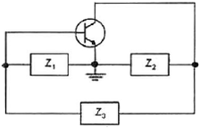
- Z1 = 용량성, Z2 = 용량성, Z3 = 용량성
- Z1 = 유도성, Z2 = 유도성, Z3 = 유도성
- Z1 = 유도성, Z2 = 용량성, Z3 = 용량성
- Z1 = 용량성, Z2 = 용량성, Z3 = 유도성
(정답률: 89%)
9. 변조도가 ‘1’이라는 의미는 무엇인가?
- 1[%] 변조
- 무변조
- 과변조
- 100[%] 변조
(정답률: 87%)
10. 디지털 신호의 정보 내용에 따라 반송파의 위상을 변화시키는 변조 방식으로 2원 디지털 신호를 2개씩 묶어 전송하는 QPSK 변조방식의 반송파 위상차는?
- 45[°]
- 90[°]
- 180[°]
- 270[°]
(정답률: 77%)
11. 다음 그림과 같은 회로에서 콘덴서 양단의 스텝 응답에 대한 상승 시간(Rise Time)은 약 얼마인가? (단, RC 시정수는 2[μs])
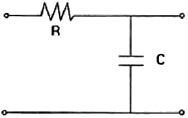
- 2[μs]
- 2.2[μs]
- 4[μs]
- 4.4[μs]
(정답률: 72%)
12. 병렬 클리핑 회로에서 클리핑 특성을 좋게 하기 위하여 사용되는 저항 R의 조건으로 옳은 것은? (단, Rd는 다이오드의 순방향 저항이다.)
- R=Rd
- R=1/Rd
- R＜Rd
- R＞Rd
(정답률: 67%)
13. BCD 코드 1001에 대한 해밍 코드를 구하면?
- 0011001
- 1000011
- 0100101
- 0110010
(정답률: 72%)
14. 다음 중 2-out of-5 code에 해당하지 않는 것은?
- 10010
- 11000
- 10001
- 11001
(정답률: 83%)
15. 숫자 0에서 9까지를 나타내기 위해 BCD 코드는 몇 비트가 필요한가?
- 4
- 3
- 2
- 1
(정답률: 86%)
16. 다음 중 Master-Slave 플립플롭은 어떠한 현상을 해결하기 위한 플립플롭인가?
- 지연 현상
- Race 현상
- Set 현상
- Toggle 현상
(정답률: 83%)
17. 다음 중 디코더(Decoder)에 대한 설명으로 틀린 것은?
- 출력보다 많은 입력을 갖고 있다.
- 한번에 하나의 출력만을 동작한다.
- N 비트의 2진 코드 입력에 의해 최대 2N개의 출력이 나온다.
- 인코더(Encoder)의 역기능을 수행한다.
(정답률: 74%)
18. 반가산기에서 입력이 A, B일 경우, 반가산기의 합(S)에 대한 출력 논리식으로 옳은 것은?
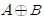
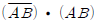
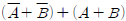
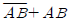
(정답률: 89%)
19. 다음 중 특정 비트의 값을 무조건 0으로 바꾸는 연산은?
- XOR 연산
- 선택적-세트(Selective-Set) 연산
- 선택적-보수(Selective-Complement) 연산
- 마스크(Mask) 연산
(정답률: 86%)
20. 다음 그림과 같은 회로의 명칭은?
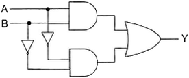
- 일치 회로
- 시프트 회로
- 카운터 회로
- 다수결 회로
(정답률: 80%)
2과목: 무선통신 기기
21. 진폭 12[V], 주파수 10[MHz]의 반송파를 진폭 6[V], 주파수 1[kHz]의 변조파 신호로 진폭 변조할 때 변조율은?
- 25[%]
- 50[%]
- 75[%]
- 100[%]
(정답률: 82%)
22. 다음 중 SSB 변조기를 구성하는 방식이 아닌 것은?
- 필터(Filter)법
- 위상천이방법
- 웨버(Weaver)법
- 압신법
(정답률: 75%)
23. 주파수 90[MHz]의 반송파를 6[kHz]의 정현파 신호로 FM 변조했을 때 최대주파수 편이가 ±76[kHz]일 경우, 점유주파수대폭은 몇 [kHz] 인가?
- 12[kHz]
- 82[kHz]
- 152[kHz]
- 164[kHz]
(정답률: 83%)
24. 다음 그림은 입력신호에서 주파수와 위상을 추출하는 위상동기루프(PLL)을 나타낸 것이다. (가), (나)에 들어갈 명칭으로 맞는 것은?
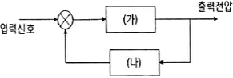
- (가) 위상검출기, (나) 저역통과필터
- (가) 위상검출기, (나) 전압제어발진기
- (가) 전압제어발진기, (나) 저역통과필터
- (가) 저역통과필터, (나) 전압제어발진기
(정답률: 68%)
25. 다음 중 무선통신 시스템의 수신신호 전력에 대한 설명으로 틀린 것은?
- 송신전력의 크기에 비례한다.
- 안테나 유효 개구면(Aperture)에 비례한다.
- 자유공간에서 송신부까지의 거리 제곱에 반비례한다.
- 신호 파장에 비례한다.
(정답률: 62%)
26. 다음 중 BPSK 변조방식에 대한 설명으로 틀린 것은?
- 정보 데이터의 심볼값에 따라 반송파의 위상이 변경되는 변조방법이다.
- 이진 신호의 s1(t)와 s2(t)의 위상차가 180°가 될 때 성능이 최대가 된다.
- 정보 데이터의 심볼값에 따라 부호가 반대로 되는 결과를 얻는다.
- BPSK 신호는 기저대역 단극성 NRZ(Non Return to Zero) 신호를 DSB 변조하여 발생할 수 있다.
(정답률: 75%)
27. 전송할 신호의 주파수에 비해 높은 주파수의 반송파를 이용하여 1과 0을 진폭, 주파수 및 위상에 대응하여 전송하는 방식은?
- 문자 동기 전송 방식
- 대역 전송 방식
- 차분 방식
- 다이코드 방식
(정답률: 84%)
28. 다음 중 눈다이어그램(Eye Diagram)에 대한 설명으로 틀린 것은?
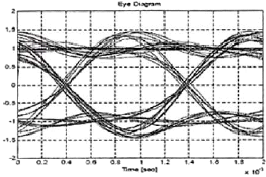
- 데이터 전송과정에서 발생하는 신호의 손상을 그림으로 살펴볼 수 있다.
- 부호간 간섭 또는 잡음이 증가할수록 눈 모양이 더욱 열려 진다.
- 수신된 펄스열을 비트주기 동안 계속 중첩하여 그린 파형이다.
- 수신기에서 1과 0을 판정하기 위하여 신호를 표본화하는 최적의 시간은 바로 눈이 가장 크게 열리는 순간이다.
(정답률: 85%)
29. 다음 중 무선방위 측정에서 전파전파에 따른 오차에 해당하지 않은 것은?
- 야간오차
- 해안선의 오차
- 대륙현상
- 산란현상
(정답률: 74%)
30. 다음 중 DGPS(Differential Global Positioning System)에 대한 설명으로 틀린 것은?
- 라디오 비컨을 통하여 방송한다.
- 관측 가능한 모든 위성을 모니터링한다.
- DGPS의 정확도는 100[m] 내외이다.
- 관측에 의한 위치와 이미 알고 있는 기준국의 위치를 비교하여 보정값을 산출한다.
(정답률: 70%)
31. 다음 중 상용부하에 대한 전력공급은 충전기가 담당하고, 충전기가 부감하기 어려운 대전류 부하는 축전지가 부담하게 하는 충전방식을 무엇이라 하는가?
- 초충전(Initial Charge)
- 균등충전(Equality Charge)
- 부동충전(Floating Charge)
- 평상충전(Normal Charge)
(정답률: 73%)
32. 다음 중 무정전 전원장치(UPS) 방식이 아닌 것은?
- ON-LINE 방식
- OFF-LINE 방식
- Hybrid 방식
- LINE 인터랙티브 방식
(정답률: 88%)
33. 다음 중 초크 L 입력형과 콘덴서 C 입력형 정류회로에 대한 비교 설명으로 틀린 것은?
- 콘덴서 C 입력형은 부하 전류의 평균치와 최대치의 차가 크다.
- 콘덴서 C 입력형은 맥동율이 크다.
- 초크 L 입력형은 정류 소자 전류가 연속적이다.
- 초크 L 입력형은 전압 변동율이 작다.
(정답률: 83%)
34. 단상 전파 브리지 정류회로에서 각 다이오드에 걸리는 최대 역전압은 약 얼마인가? (단, 1차측 입력실효전압 100[V], 트랜스포머의 권선비는 n1:n2=10:1)
- 10[V]
- 14.1[V]
- 100[V]
- 141[V]
(정답률: 80%)
35. 다음 중 태양전지 구조에 대한 설명으로 틀린 것은?
- 일반적인 태양전지는 3층 구조로 되어 있다.
- 태양건전지는 N형과 P형 반도체로 구성되어 있다.
- 가장 많이 보급되는 태양전지 재료는 실리콘결정형이다.
- 실리콘원자의 최외각 전자의 개수는 4개이다.
(정답률: 76%)
36. 다음 중 송신기의 변조특성을 나타내는 요소가 아닌 것은?
- 변조의 직선성
- 선택도
- 종합왜율
- 신호대 잡음비
(정답률: 64%)
37. 다음 중 진폭변조(AM) 송신기의 전력 측정방법으로 적합하지 않은 것은?
- 실효 저항법
- 의사 공중선법
- 전구의 조도비교법
- 볼로메터 브리지법
(정답률: 86%)
38. 다음 중 급전선(선로)에 나타나는 정재파의 전류, 전압의 분포와 위상에 대한 설명으로 옳은 것은?
- 전류, 전압의 분포는 선로상의 어디서나 같으며, 위상은 선로의 각 점에 따라 다르다.
- 전류, 전압의 분포는 선로상의 어디서나 같으며, 위상도 선로의 어디서나 같다.
- 전류, 전압의 분포는 λ/2마다 최대와 최소가 있고 위상은 선로의 각 점에 따라 다르다.
- 전류, 전압의 분포는 λ/2마다 최대와 최소가 있고 위상은 선로의 어디서나 같다.
(정답률: 63%)
39. 급전선의 특성 임피던스 Zo와 급전선을 통과하는 전파의 전파속도 v를 알면 급전선이 가지는 인덕턴스값(L)을 알 수 있다. 다음 중 인덕턴스값(L)을 구하는 식으로 맞는 것은?
- Zo / v
- v / Zo
- v × Zo
- 1 / (v×Zo)
(정답률: 80%)
40. 인버터의 주파수가 2[kHz]가 되려면 인버터의 On, Off 주기는 몇 [ms]로 해야 하는가?
- 0.1[ms]
- 0.5[ms]
- 1[ms]
- 10[ms]
(정답률: 86%)
3과목: 안테나 공학
41. 레이더의 안테나에서 송신된 펄스가 6[μs] 후에 목표물로부터 반사되어 수신되었다면 목표물까지의 거리는?
- 450[m]
- 900[m]
- 1,800[m]
- 3,600[m]
(정답률: 72%)
42. 수직 안테나에서 방사되는 수직 편파가 지구 자계의 영향을 받는 전리층에서 반사되면 어떠한 편파가 되는가?
- 수직 편파
- 수평 편파
- 원편파
- 타원 편파
(정답률: 74%)
43. 다음 중 평면파에 대한 설명으로 틀린 것은? (단, εo: 진공의 유전율, μo: 진공의 투자율, εs: 비유전율, μs: 비투자율, c: 빛의 속도)
- 공중선으로부터 방사된 전파는 공중선 부근에서는 구형파이지만 상당히 먼거리에서는 평면파로 된다.
- 전파 속도는
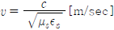
이다. - 자유 공가나 임피던스는
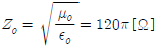
이다. - 진행 방향에 대해서 전계와 자계가 서로 180[°]를 이룬다.
(정답률: 81%)
44. 다음 중 정재파비가 1일 때 선로에는 어떤 성분의 파가 실리게 되는가?
- 정재파
- 반사파
- 진행파
- 원편파
(정답률: 80%)
45. 안테나의 급전점 인피던스가 75[Ω]인 반파장 안테나와 특성 임피던스가 600[Ω]인 평행2선식 선로를 λ/4 임피던스 변환기로서 정합시키고자 할 때, 이 변환기의 특성 임피던스는 약 얼마인가?
- 112[Ω]
- 212[Ω]
- 312[Ω]
- 412[Ω]
(정답률: 80%)
46. 비동조 급전선의 급전점에 정합회로를 설정하는 이유는?
- 급전선의 파동 임피던스를 감소시키기 위하여
- 급전선의 파동 임피던스를 일정하게 하기 위하여
- 급전선에 정재파가 실리지 않게 하기 위하여
- 안테나의 고유파장을 조절하기 위하여
(정답률: 67%)
47. 다음 중 Balun을 사용하는 이유로 알맞은 것은?
- 불평형 전류를 흐르지 못하도록 하고 평형형 전류만 흐르도록 하기 위해서이다.
- 안테나의 임피던스를 부정합시키기 위해서이다.
- 안테나의 손실을 줄이고 정재파비를 크게 하기 위해서이다.
- 안테나의 대역폭을 크게 하기 위해서이다.
(정답률: 82%)
48. 다음 중 구형 도파관에 대한 설명으로 틀린 것은?
- TE10 모드인 경우 차단파장(λc)는 4a이다.
- 전계는 Y방향 성분만 존재한다.
- 자계는 XZ방향 성분만 존재한다.
- 구형 도파관의 기본 모드는 TE10 모드이다.
(정답률: 83%)
49. 사용주파수가 20[MHz]이고, 복사저항이 73.13[Ω]인 반파장 다이폴 안테나의 실효길이는 약 얼마인가?
- 2.4[m]
- 3.6[m]
- 4.8[m]
- 5.2[m]
(정답률: 59%)
50. 다음 중 접지안테나 손실의 대부분을 차지하는 것은?
- 도체저항
- 유전체 손실
- 접지저항
- 코로나 손실
(정답률: 82%)
51. 송신출력 1[W], 송수신 안테나 이득이 각각 20[dBi]이고 수신입력 레벨이 -30[dBm]일 경우 자유공간손실은 몇 [dB]인가? (단, 전송선로 손실 및 기타 손실은 무시한다.)
- 30[dB]
- 70[dB]
- 100[dB]
- 120[dB]
(정답률: 75%)
52. 다음 중 철탑의 높이가 같은 경우에 일반적으로 방사 효율이 가장 낮은 안테나는?
- 연장코일을 사용하는 안테나
- 역 L형 안테나
- 우산형 안테나
- 원정관(Top Ring) 안테나
(정답률: 81%)
53. Phased Array 안테나의 각 안테나 소자에 공급하는 전류의 위상을 조정하면 어떤 특성을 얻을 수 있는가?
- 복사전력이 증가한다.
- 급전선의 VSWR이 낮아진다.
- 복사패턴의 방향을 바꿀 수 있다.
- 위상을 바꾸지 않을 때 보다 임피던스 정합이 용이하다.
(정답률: 72%)
54. 다중 접지의 접지 저항과 용도로 각각 옳은 것은?
- 약 1~2[Ω] 정도, 대전력용
- 약 5[Ω] 정도, 소전력용
- 약 10[Ω] 정도, 중파 방송용
- 약 20[Ω] 정도, 단파 방송용
(정답률: 77%)
55. 대지면에 설치된 수직 접지 안테나로부터 지표면을 따라 전파가 진행할 때 감쇠가 적은 순서대로 바르게 배열한 것은?
- 해면, 평지, 산악, 도심지
- 도심지, 산악, 평지, 해면
- 해면, 도심지, 평지, 산악
- 도심지, 평지, 산악, 해면
(정답률: 87%)
56. 다음 중 수정 굴절률에 대한 설명으로 틀린 것은?
- 수정 굴절률을 사용하면 구면 대기층에 대해서도 평면 대기층에 대한 스넬의 법칙을 적용할 수 있다.
- 표준대기에서 높이 h에 대한 M단위 수정 굴절률의 비는 dm/dh는 음수이다.
- 수정 굴절률의 값은 높이와 비례 관계에 있다.
- 수정 굴절률의 값은 굴절률과 비례 관계에 있다.
(정답률: 82%)
57. 주간에 20[MHz]의 신호로 원양에서 조업 중인 선박과 통신을 하고자 할 때 이용되는 전리층은?
- D층
- Es층
- E층
- F층
(정답률: 70%)
58. 다음 중 송ㆍ수신점간의 거리가 정해졌을 때 LUF를 결정하는 요인이 아닌 것은?
- 전리층의 높이
- 송수신 안테나 이득
- 수신점에서의 잡음 강도
- 통신 전송 형태
(정답률: 60%)
59. 페이딩을 방지하기 위해 둘 이상의 수신 안테나를 서로 다른 장소에 설치하여 두 수신 안테나의 출력을 합성하거나 양호한 출력을 선택하여 수신하는 방법이 사용되는 페이딩은?
- 간섭성 페이딩
- 편파성 페이딩
- 흡수성 페이딩
- 선택성 페이딩
(정답률: 78%)
60. 다음 중 자기람 현상에 대한 설명으로 틀린 것은?
- 고위도 지방이 심하게 나타난다.
- 야간보다 주간에 많이 나타난다.
- 지자계의 급격한 변동을 발생시킨다.
- 태양 표면의 폭발에 의해 방출된 다량의 대전입자가 지구에 도달하기 때문에 야기된다.
(정답률: 78%)
4과목: 무선통신 시스템
61. 다음 중 무선 송신기에서 발생하는 스퓨리어스의 발사 방지 방법이 아닌 것은?
- 전력 증폭단의 바이어스를 취한다.
- 급전선에 트랩(Trap)을 삽입한다.
- 증폭단과 공중선 결합회로에 π형 회로를 사용한다.
- 전력 증폭단을 Push-Pull로 접속한다.
(정답률: 54%)
62. 30개의 구간을 망형으로 연결하기 위해 필요한 회선 수는 몇 개인가?
- 435개
- 400개
- 380개
- 200개
(정답률: 85%)
63. QPSK 변조방식을 사용하는 통신에서 데이터 전송속도가 9,600[bps]일 때, 변조속도는 얼마인가?
- 1,600[baud]
- 2,400[baud]
- 3,200[baud]
- 4,800[baud]
(정답률: 70%)
64. 다음 중 마이크로 웨이브(Micro Wave) 통신에 대한 설명으로 틀린 것은?
- 사용주파수의 범위가 넓다.
- PTP(Point to Point) 통신이 가능하다.
- 중계없이 원거리 통신이 가능하다.
- 외부잡음의 영향이 적다.
(정답률: 69%)
65. 이동통신시스템 기지국의 최번 시(Busy Hour Traffic) 1시간 동안 총 통화 호수가 1,650호이고 평균 통화 시간이 2분일 때 통화량은?
- 42[Erl]
- 55[Erl]
- 68[Erl]
- 74[Erl]
(정답률: 79%)
66. 다음 중 이동통신시스템에서 순방향 채널에 해당되지 않는 것은?(오류 신고가 접수된 문제입니다. 반드시 정답과 해설을 확인하시기 바랍니다.)
- Sync Channel
- Paging Channel
- Traffic Channel
- Access Channel
(정답률: 66%)
67. 무선통신시스템에서 기지국과 이동국과의 다중 경로로 인하여 신호가 통달되는 거리의 차가 최대 2[km]이고 전송속도가 512[kbps]일 때 최소 보호 비트는 얼마인가?
- 2비트
- 4비트
- 6비트
- 8비트
(정답률: 56%)
68. 다음 중 CDMA 시스템의 용량을 결정하는 주요 파라미터가 아닌 것은?
- 채널간 간섭
- 음성 활성화율
- 주파수 재사용 효율
- 낮은 호 손실률
(정답률: 63%)
69. 다음 중 디지털TV 변조방식인 8VSB의 성상도(Constellation)으로 맞는 것은?
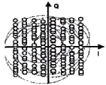
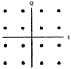
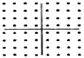
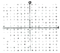
(정답률: 78%)
70. 다음 중 브로드밴드(Broad Band) 전송 방식의 특징이 아닌 것은?
- 통신경로를 여러 개의 주파수 대역으로 나누어 이용한다.
- 한 회선으로 하나의 신호만 전송한다.
- Audio/Video 등에 대한 전송도 가능하다.
- 주파수 분할 다중화 방식을 이용한다.
(정답률: 79%)
71. 다음 중 블루투스(Bluetooth)의 특징이 아닌 것은?
- 데이터 전송 거리는 10[m] 정도이며 최대 100[m]까지 가능하지만 이 경우 파워의 소모가 크다.
- 전송방식은 주파수 이동 대역 확산 방식을 사용하였으며 간섭과 페이딩에 강인하도록 설계되었다.
- 유선 네트워크를 구성할 수 있다.
- 사용주파수 대역은 2.4[GHz]의 ISM(Industrial Scientific Medical) 대역을 사용한다.
(정답률: 82%)
72. 다음 중 링크를 경유하는 통신에서 MAC(Media Access Control) 프로토콜이 필요한 이유가 아닌 것은?
- 매체를 공유하여 사용하는 경우에 여러 단말사이의 경합이 불가피하여 조정이 필요하다.
- 매체에서 문제가 발생하여 전송에서 오류가 발생하였을 때 이를 극복하기 위한 방안이 필요하다.
- 매체의 특성에 적합한 경로로 정보가 전달될 수 있도록 하는 방안이 필요하다.
- 매체에서 문제가 발생하여 전송에서 오류가 발생하는 것을 예방하기 위한 방안이 필요하다.
(정답률: 66%)
73. 다음의 문제가 발생하는 것을 막아주는 프로토콜 기능은 어느 것인가?
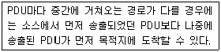
- 동기화
- 순서결정
- 주소기능
- 다중화
(정답률: 86%)
74. 다음 중 인접 계층간 통신을 위한 인터페이스는?
- SAP(Service Access Point)
- PDU(Protocol Data Unit)
- SDU(Service Data Unit)
- PCI(Programmable Communication Interface)
(정답률: 79%)
75. 다음 중 OSI 7계층에서 메시지 형식 변환, 암호화, 텍스트 압축 등의 역할을 하는 계층은?
- 표현 계층
- 세션 계층
- 네트워크 계층
- 데이터링크 계층
(정답률: 68%)
76. 다음 중 HDLC(High-Level Data Link Control)에 대한 설명으로 틀린 것은?
- CRC 방식의 오류 검출을 수행한다.
- 임의의 비트 패턴 전송이 불가능하다.
- 신뢰성이 높은 전송이 가능하다.
- 수신측의 응답을 기다리지 않고 연속으로 데이터를 전송할 수 있다.
(정답률: 76%)
77. 다음 중 근거리 통신망 시스템 구축 계획 설계시 요구되는 네트워크 서비스의 종류가 아닌 것은?
- 데이터그램 서비스(Datagram Service)
- 가상회선 서비스(Connection Oriented Service)
- 패킷 전달 서비스(Packet Translation Service)
- 회선 연결 서비스(Circuit Connection Service)
(정답률: 59%)
78. 다음 중 무선통신시스템 설계 시 단파가 중장파보다 불리한 점으로 옳은 것은?
- 복사효율이 나쁘다.
- 페이딩의 영향이 더 크다.
- 안테나 설치가 어렵다.
- 원거리 통신에 불리하다.
(정답률: 70%)
79. 다음 중 통신시스템의 장애를 극복하기 위해 H/W Redundancy 방안이 아닌 것은?
- Duplex
- Active/Standby
- N-version Program
- Spare Redundancy
(정답률: 79%)
80. 다음 중 무선통신 네트워크의 유지보수에서 쓰이는 용어인 SINAD에 대한 설명으로 틀린 것은?
- Signal to Noise And Distortion의 약어이다.
- 무선통신 기지국의 기본적인 측정항목이다.
- SINAD를 측정하기 위해서 별도의 신호 발생기와 SINAD 계측기가 필요하다.
- 음성의 압축률을 측정할 때 이용되는 방법이다.
(정답률: 73%)
5과목: 전자계산기 일반 및 무선설비기준
81. 상대 주소지정(Relative Addressing)에서 사용하는 레지스터는 무엇인가? (문제 오류로 실제 시험에서는 모두 정답처리 되었습니다. 여기서는 1번을 누르면 정답처리 됩니다.)
- 일반 레지스터(General Register)
- 색인 레지스터(Index Register)
- 시프트 레지스터(Shift Register)
- 메모리 주소 레지스터(Memory Address Register)
(정답률: 80%)
82. 다음 중 콘솔(Console)에 대한 설명으로 옳은 것은?
- 컴퓨터의 상태를 감시하고, 운용자의 필요에 의해서 동작에 개입할 수 있도록 설치된 단말기이다.
- 주기억 장치의 용량 부족을 보충하기 위해 외부에 부착하는 저장용 단말기이다.
- 타자기와 비슷한 형태의 입력 장치로서, 문자나 숫자의 키(Key)를 눌러서 컴퓨터에 입력시키는 단말기이다.
- 컴퓨터에서 처리된 결과를 인쇄하는 데 사용되는 단말기이다.
(정답률: 73%)
83. 시프트 레지스터(Shift Register)의 내용을 오른쪽으로 2비트 이동시키면 원래 저장되었던 값은 어떻게 변화되는가?
- 원래 값의 2배
- 원래 값의 4배
- 원래 값의 1/2배
- 원래 값의 1/4배
(정답률: 77%)
84. 다음 중 후입선출(LIFO) 처리제어 방식은?
- 스택
- 선형 리스트
- 큐
- 원형 연결 리스트
(정답률: 75%)
85. 다음 중 다중프로그래밍(Multi-Programming)을 위하여 시스템이 갖추어야 할 것으로 관계가 가장 적은 것은?
- 인터럽트(Interrupt)
- 가상메모리(Virtual Memory)
- 시분할(Time Slicing)
- 스풀링(Spooling)
(정답률: 58%)
86. 다음 중 운영체제의 프로세스 관리기능에 속하지 않는 것은?
- 사용자 및 시스템 프로세스의 생성과 제거
- 프로그램내 명령어 형식의 변경
- 프로세스 동기화를 위한 기법의 제공
- 교착상태 방지를 위한 기법 제공
(정답률: 68%)
87. 프로그램 구현시 목적파일(Object File)을 실행 파일(Execute File)로 변환해 주는 프로그램은?
- 링커(Linker)
- 프리프로세서(Preprocessor)
- 인터프리터(Interpreter)
- 컴파일러(Comipler)
(정답률: 62%)
88. 객체지향 언어의 세 가지 언어적 주요 특징이 아닌 것은?
- 추상 데이터 타입
- 상속
- 동적 바인딩
- 로더(Loader)
(정답률: 77%)
89. 다음 중 ROM(Read-Only Memory)에 저장하기 가장 적합한 것은?
- 사용자 프로그램
- BIOS(Basic Input Output System)
- 인터럽트 벡터
- 사용자 데이터
(정답률: 76%)
90. CPU가 어떤 프로그램을 순차적으로 수행하는 도중에 외부로부터 인터럽트 요구가 들어오면, 원래의 프로그램을 중단하고, 인터럽트를 위한 프로그램을 먼저 수행하게 되는데 이와 같은 프로그램을 무엇이라 하는가?
- 명령 실행 사이클
- 인터럽트 서비스 루틴
- 인터럽트 사이클
- 인터럽트 플래그
(정답률: 80%)
91. 정부가 전파자원의 이용촉진에 필요한 시책을 수립하고 시행하여 하는 목적은?
- 한정된 전파자원을 공공복리의 증진에 최대한 활용하기 위함이다.
- 무한한 전파자원을 개발하고 전파통신을 비롯한 과학기술 발전을 촉진하기 위함이다.
- 새로운 전파자원의 이용기술을 개발하여 국제간 주파수 할당 분배를 확보하기 위함이다.
- 전파자원에 대한 이용기술을 원활히 개발하고 효율적으로 이용하기 위함이다.
(정답률: 66%)
92. 다음 중 준공검사를 받은 후 운용하여야 하는 무선국은?
- 국가안보 또는 대통령 경호를 위하여 개설하는무선국
- 공해 또는 극지역에 개설하는 무선국
- 외국에서 운용할 목적으로 개설한 육상이동지구국
- 도로관리를 위하여 개설하는 기지국
(정답률: 79%)
93. 전파형식의 표시방법 중 등급의 기본특성에 대한 표현으로 옳은 것은?
- 첫째기호는 주반송파의 변조형식
- 둘째기호는 다중화 특성
- 셋째기호는 주반송파를 변조시키는 신호의 특성
- 넷째기호는 송신할 정보
(정답률: 76%)
94. 의료용 전파응용설비는 몇 와트를 초과하는 경우 허가를 받아야 하는가?
- 30와트
- 50와트
- 80와트
- 100와트
(정답률: 77%)
95. 다음 중 적합인증 대상기자재에 해당되지 않는 것은?
- PCM단국장치
- 위성비상위치지시용 무선표지설비의 기기
- 레벨조정기(전송망 기자재)
- 자동차 장착 디지털기기
(정답률: 81%)
96. 전자파 장해를 일으키는 기자재가 ‘전자파 적합’의 판정을 받으려면 다음 중 어느 기준에 적합하여야 하는가?
- 전기통신설비에 관한 기술기준
- 정보통신기기 인증규칙
- 전자파장해 방지기준
- 전자파강도 측정기준
(정답률: 76%)
97. 송신장치의 종단증폭기의 정격출력을 의미하는 것은?
- 평균전력(PY)
- 첨두포락선전력(PX)
- 반송파전력(PZ)
- 규격전력(PR)
(정답률: 60%)
98. 무선설비에 전원을 공급하는 고압전기용 전기설비에는 안전시설을 하도록 하고 있다. 여기에서 고압전기란?
- 600[V]를 초과하는 고주파 및 교류전압과 750[V]를 초과하는 직류전압
- 750[V]를 초과하는 고주파 및 교류전압과 750[V]를 초과하는 직류전압
- 1000[V]를 초과하는 고주파 및 교류전압과 직류전압
- 220[V]를 초과하는 고주파 및 교류전압
(정답률: 86%)
99. 무선설비의 주요 기자재를 검수하는 방법 중 시험에 의한 방법의 검수 내용으로 틀린 것은?
- 검수방법은 감리사가 입회하여 재료제작자의 시험설비나 공장시험장에서 시험을 실시하고 그 결과로 얻은 성적표로 검수한다.
- 감리사가 공공시험기관에 시험을 의뢰 요청하여 실시하고 그 시험성적 결과에 의하여 검수한다.
- 규격을 증명하는 KS 등의 마크가 표시되어 있는 규격품이나 적절하다고 인정할 수 있는 품질증명이 첨부되어 있는 제품을 대상으로 한다.
- 대상 기자재의 범위는 공사상 중요한 기자재 또는 특별 주문품, 신제품 등으로써 품질 성능을 판정할 필요가 있는 기자재로 한다.
(정답률: 86%)
100. 다음 중 무선설비 기성부분검사와 준공검사에 대한 설명으로 알맞은 것은?
- 공사현장에 주요공사가 완료되고 현장이 정리단계에 있을 때에는 준공 6개월 전에 준공기한 내 중공 가능여부 및 미진사항의 사전보완을 위해 최종 준공검사를 실시하여야 한다.
- 감리사는 시공자로부터 시험운용계획서를 제출받아 검토ㆍ확정하여 시험 운용 5일 전까지 발주자에게만 통보하여야 한다.
- 예비준공검사는 감리사가 확인한 정산설계도서 등에 의거 검사하여야 하며, 그 검사 내용은 준공검사에 준하여 철저히 시행하여야 한다.
- 감리업자 대표자는 기성부분검사원 또는 준공계를 접수하였을 때는 10일 안에 소속 감리사 중 특급감리사급 이상의 자를 검사자로 임명하여, 이 사실을 즉시 본인과 발주자에게 통보하여야 한다.
(정답률: 69%)
이유는 다이오드가 병렬로 연결되면 전류가 각 다이오드를 통해 흐르게 되므로 전류 용량이 증가합니다. 이는 정류회로에서 전류가 더 많이 공급될 수 있게 하며, 부하에 안정적인 전압을 공급할 수 있게 합니다.